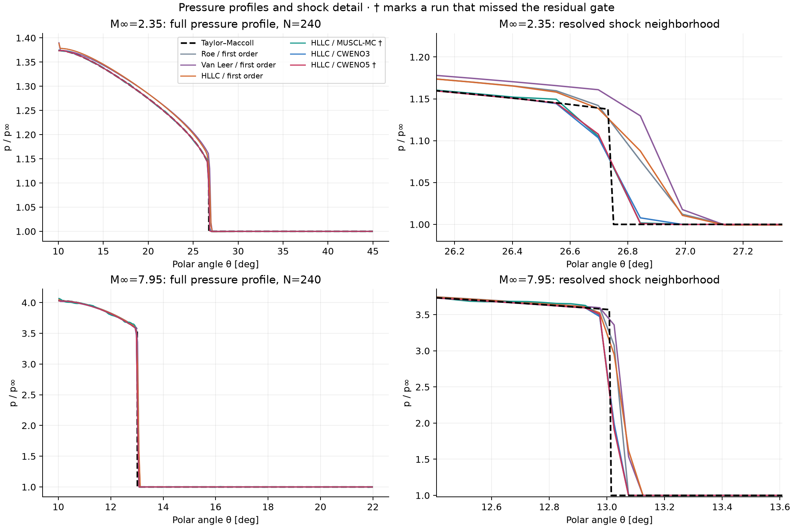
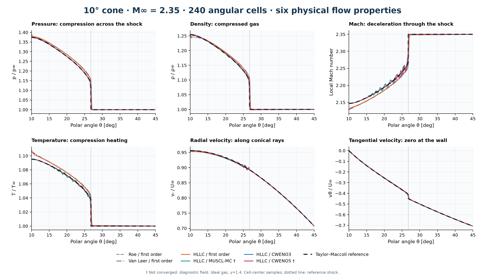
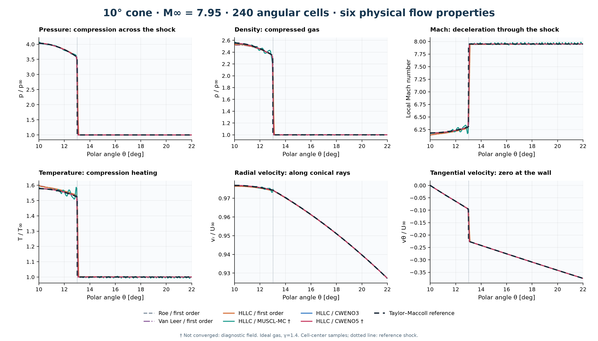
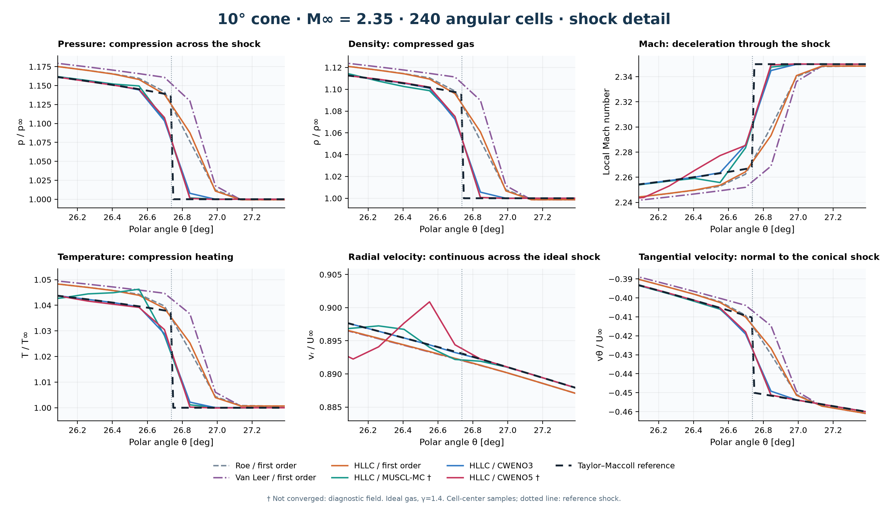
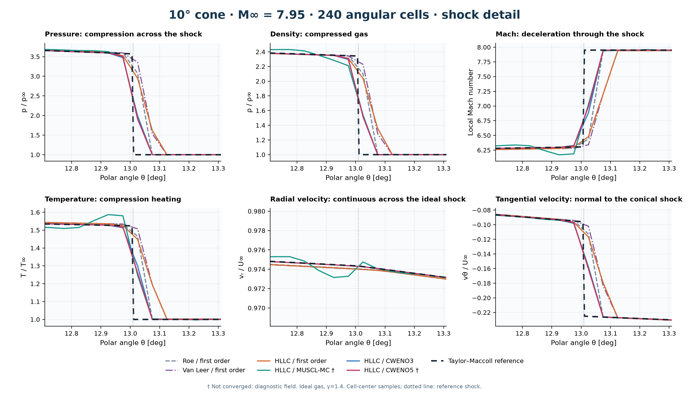
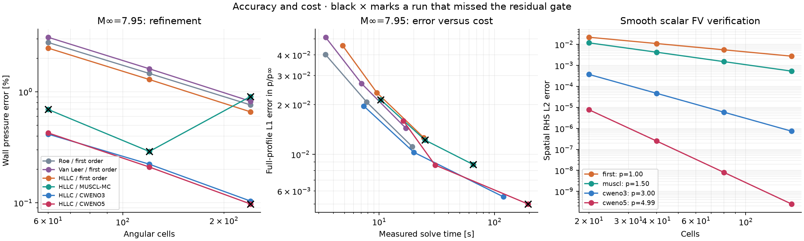
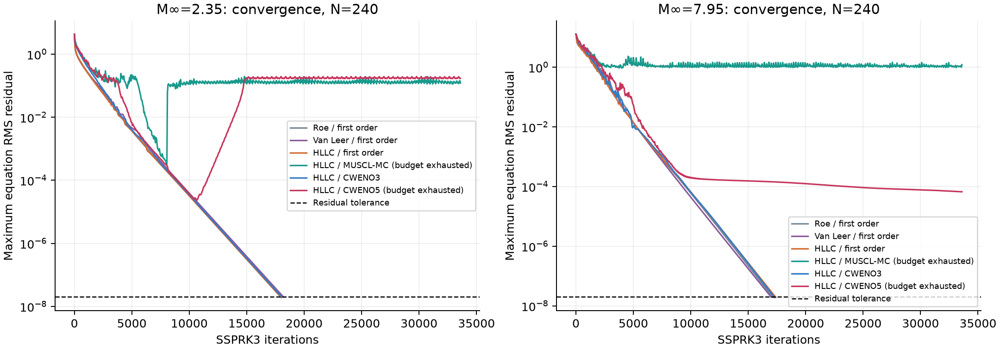
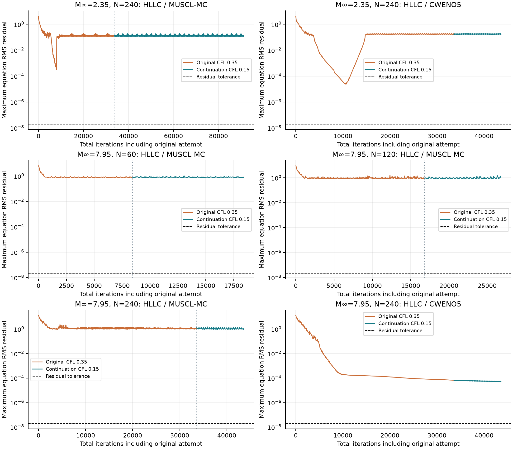
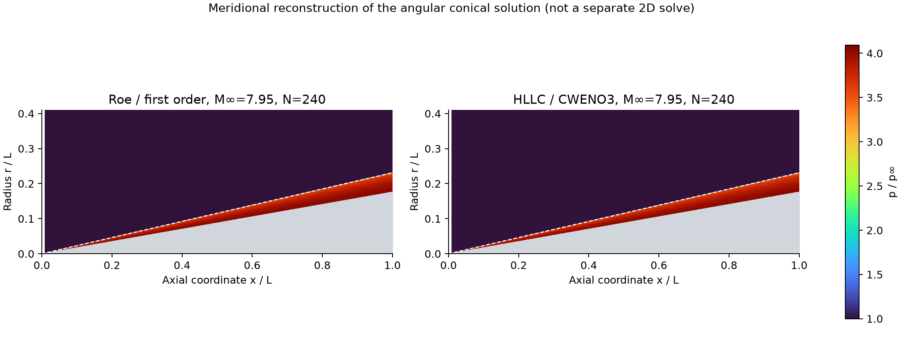

What was completed
The inviscid angular conical Euler equations were independently reimplemented in Python/NumPy, preserving the historical radial/tangential variables and geometric source terms. Flux, reconstruction, source quadrature, boundaries, time integration and diagnostics are separate modules. Original Fortran files were preserved.
36controlled flow runs
30/36reached residual tolerance
3 & 5verified smooth spatial orders
CPUno external CFD solver
Cases: Mach 7.95 / 10° cone / 22° outer boundary (historical-style inviscid wall recovery), and Mach 2.35 / 10° cone / 45° outer boundary (independent benchmark). Both use gamma=1.4, rho∞=1, U∞=1 and p∞=1/(gamma M∞²). Angular grids have 60, 120 and 240 physical cells plus ghosts; archived N=240 included boundary entries, so those grids are comparable in scale, not identical.
Finest-grid measured results
Same physical case, cell count, CFL=0.35, SSPRK3 and residual tolerance 2e−8. Flux-family effects are compared at first order; reconstruction effects hold HLLC fixed. Times are sequential CPU measurements on this host, not portable performance guarantees.
| M∞ | N | Method | Wall p/p∞ | Wall error | Shock-angle error | Profile L1 | Time [s] | Residual gate |
|---|---|---|---|---|---|---|---|---|
| 2.35 | 240 | Roe / first order | 1.3885345 | 1.0625% | 0.1024° | 0.0048813 | 112.84 | PASS |
| 2.35 | 240 | Van Leer / first order | 1.3900717 | 1.1744% | 0.1746° | 0.0049668 | 60.44 | PASS |
| 2.35 | 240 | HLLC / first order | 1.3885380 | 1.0628% | 0.1487° | 0.0048974 | 33.23 | PASS |
| 2.35 | 240 | HLLC / MUSCL-MC | 1.3740222 | 0.0062% | 0.0147° | 0.00043528 | 76.12 | NOT CONVERGED |
| 2.35 | 240 | HLLC / CWENO3 | 1.3739233 | 0.0010% | 0.0172° | 0.00019143 | 61.44 | PASS |
| 2.35 | 240 | HLLC / CWENO5 | 1.3734180 | 0.0377% | 0.0191° | 0.00022588 | 154.12 | NOT CONVERGED |
| 7.95 | 240 | Roe / first order | 4.0627582 | 0.7618% | 0.0376° | 0.011153 | 19.33 | PASS |
| 7.95 | 240 | Van Leer / first order | 4.0651903 | 0.8222% | 0.0437° | 0.01445 | 16.98 | PASS |
| 7.95 | 240 | HLLC / first order | 4.0586429 | 0.6598% | 0.0419° | 0.012625 | 24.38 | PASS |
| 7.95 | 240 | HLLC / MUSCL-MC | 4.0686193 | 0.9072% | 0.0006° | 0.0086802 | 65.37 | NOT CONVERGED |
| 7.95 | 240 | HLLC / CWENO3 | 4.0278567 | 0.1038% | 0.0030° | 0.0055402 | 119.24 | PASS |
| 7.95 | 240 | HLLC / CWENO5 | 4.0281012 | 0.0977% | 0.0005° | 0.0050115 | 194.52 | NOT CONVERGED |
Independent Taylor–Maccoll references: M2.35 wall pressure ratio 1.37393637, shock 26.73671772°; M7.95 wall pressure ratio 4.03204056, shock 13.00886085°.
Higher reconstruction order does not guarantee the smallest wall error at every grid spacing. Shock alignment, limiter behavior, boundary closure and metric choice all matter. Assess full-profile error, shock location and cost alongside surface pressure.
Pressure profiles and shock resolution

Shock location is estimated from the strongest pressure gradient with a local parabolic peak fit. Full-profile L1 includes the shock; the formal high-order claim concerns smooth spatial reconstruction, not pointwise convergence through that discontinuity.
Six physical flow properties
Pressure and density increase across the compression shock, temperature rises, and the local Mach number decreases. The tangential velocity approaches zero at the cone wall. Temperature is inferred from the ideal-gas relation T/T∞=(p/p∞)/(ρ/ρ∞); local Mach uses both velocity components. These are numerical ideal-gas predictions, not measured experimental data.


Resolve differences close to the compression shock


Mach 2.35 figure PDF · Mach 7.95 figure PDF · Mach 2.35 reference CSV · Mach 7.95 reference CSV. Every recorded method/grid also has a CSV with the same seven columns alongside its JSON and NPZ.
Refinement, accuracy and computational cost

The smooth scalar finite-volume spatial operator gives observed order 2.999 for CWENO3 and 4.992 for CWENO5. MUSCL-MC gives about 1.5 in this global derivative norm because the limiter reduces accuracy near smooth extrema. SSPRK3 remains third order in time; CWENO5 is not a claim of fifth-order transient time integration.
The cost/error plot includes every recorded run; consult its convergence status in the table before treating an endpoint as a converged steady solution.
Actual convergence histories

The stopping gate is the maximum RMS residual over all four conserved equations, rather than wall-pressure stability alone. A run marked NOT CONVERGED is retained as a measured diagnostic and is not accepted as a converged steady result.
Lower-CFL stability checks
0 of 6 checkpoint continuations reached the same residual tolerance at CFL=0.15. Original CFL=0.35 failures remain in the controlled-study table and convergence plot. This is a separate diagnostic, not a cold-start performance comparison: reported continuation times exclude the original attempt.

| M∞ | N | Method | Wall p/p∞ | Wall error | Shock-angle error | Profile L1 | Time [s] | Residual gate |
|---|---|---|---|---|---|---|---|---|
| 2.35 | 240 | HLLC / MUSCL-MC | 1.3756031 | 0.1213% | 0.0170° | 0.00044756 | 209.61 | NOT CONVERGED |
| 2.35 | 240 | HLLC / CWENO5 | 1.3740455 | 0.0079% | 0.0186° | 0.0002149 | 44.34 | NOT CONVERGED |
| 7.95 | 60 | HLLC / MUSCL-MC | 4.0051479 | 0.6670% | 0.0059° | 0.022247 | 13.21 | NOT CONVERGED |
| 7.95 | 120 | HLLC / MUSCL-MC | 4.0720502 | 0.9923% | 0.0016° | 0.014257 | 15.28 | NOT CONVERGED |
| 7.95 | 240 | HLLC / MUSCL-MC | 4.0639719 | 0.7919% | 0.0004° | 0.0089308 | 20.91 | NOT CONVERGED |
| 7.95 | 240 | HLLC / CWENO5 | 4.0281012 | 0.0977% | 0.0005° | 0.0050115 | 46.06 | NOT CONVERGED |
Six-property figures use the converged lower-CFL continuation where available, identified in the legend. The original pressure-only and cost/error figures retain the common-CFL experiment. See stability.json for parent files, starting residuals, iteration counts and separate costs.
Color contour comparison

Both displayed fields reached the residual gate. The 1D angular solution is mapped onto conical rays in a meridional plane. This illustrates shock thickness and pressure distribution; it is not a separate two-dimensional simulation. The dashed ray is the independently calculated Taylor–Maccoll shock.
Verification and safeguards
- Primitive/conserved conversion and all five equal-state flux checks pass near roundoff.
- Polynomial reconstructions preserve their input cell averages.
- Three-point Gaussian source quadrature uses the same cell polynomial as the face states; the spherical geometric terms are retained.
- Taylor–Maccoll shooting uses independent RK4/bisection; ODE step refinement changes wall pressure by less than 1e−7. Shock jump fluxes and zero wall-normal velocity are separately checked.
- All run states remained finite with positive density/pressure; minimum reported density 0.98556, pressure 0.010948.
- Global discrete flux/source balance closes within 7.8e-16. Mass alone is not constant in this angular balance law because of radial/geometric source terms.
- Sampled reconstructed states are scaled toward the cell mean when needed; an inadmissible RK update is rejected and retried with smaller dt. HLLC has a face-local HLLE fallback. These checks are not a general entropy-stability or positivity theorem.
Roe uses acoustic eigenvalue smoothing. Wall ghosts reflect angular momentum; the wall face has zero mass/energy flux and a pressure force. This boundary closure can limit global order. Uniform Cartesian freestream has a rotating angular basis; its uncorrected discrete residual decreases with refinement. Optional discrete equilibrium subtraction exists but is disabled in every reported comparison.
A reference discrepancy found during verification
The NASA Mach2.35 cone page prints a theoretical wall pressure ratio of 1.4234 and shock angle 27.1843°. Our independently integrated Taylor–Maccoll solution gives 1.37393637 and 26.73671772°. NASA's own listed Wind-US wall pressure, about 1.3740, agrees closely with our independent pressure value. The printed theoretical table/angle are therefore not used as acceptance truth here. The discrepancy is recorded rather than silently fitting the solver to those numbers.
Check verification.json for the ODE refinement, shock Rankine–Hugoniot and wall-condition evidence. These establish numerical consistency of the reference; they are not experimental validation of a real hypersonic flow.
Legacy defects corrected in the new core
In Second0.for, the interactive input unit is reopened as an output file; the second-order tangential left flux uses right-face dissipation coefficients; radial and energy second-order branches overwrite FINVT; energy dissipation also uses radial coefficients. The new implementation assembles all four flux components once per face, applies a limiter, and uses one residual per conserved variable. No original archived source was overwritten.
The original Roe average and unlimited extrapolation are not copied bit for bit. This is a documented physics/algorithm migration with corrected standard implementations. CWENO belongs to the post-archive literature (2016 preprint / 2018 publication), while HLLC, MUSCL and SSPRK are established methods, not inventions of 2026.
Reproduce and inspect
python verify.py python study.py --cells 60 120 240 python stability_check.py python render_report.py python solver.py --mach 7.95 --outer 22 --cells 240 --flux hllc --reconstruction cweno3 --steps 40000 --output results/my-run
Use Python with NumPy and Matplotlib. Running these commands from this directory on an ordinary machine is supported; in this restricted host runs were launched from the authorized Courses root with full paths. The default is HLLC/CWENO3, which reached the residual gate in all six case/grid combinations. MUSCL-MC and CWENO5 have recorded shock-case convergence limitations despite their good pressure errors in some runs.
Complete run configuration and measured metrics · Verification evidence · Compact summary · Code guide and equations
All 36 measured runs
| M∞ | N | Method | Wall p/p∞ | Wall error | Shock-angle error | Profile L1 | Time [s] | Residual gate |
|---|---|---|---|---|---|---|---|---|
| 2.35 | 60 | Roe / first order | 1.4306761 | 4.1297% | 0.3287° | 0.019832 | 3.78 | PASS |
| 2.35 | 60 | Van Leer / first order | 1.4365055 | 4.5540% | 0.6895° | 0.020281 | 3.41 | PASS |
| 2.35 | 60 | HLLC / first order | 1.4306817 | 4.1301% | 0.6183° | 0.019931 | 4.35 | PASS |
| 2.35 | 60 | HLLC / MUSCL-MC | 1.3739703 | 0.0025% | 0.0270° | 0.00089553 | 4.78 | PASS |
| 2.35 | 60 | HLLC / CWENO3 | 1.3738895 | 0.0034% | 0.0715° | 0.00065907 | 7.42 | PASS |
| 2.35 | 60 | HLLC / CWENO5 | 1.3739058 | 0.0022% | 0.0605° | 0.00068153 | 9.13 | PASS |
| 2.35 | 120 | Roe / first order | 1.4028383 | 2.1036% | 0.1888° | 0.010551 | 9.38 | PASS |
| 2.35 | 120 | Van Leer / first order | 1.4058568 | 2.3233% | 0.3429° | 0.010751 | 7.48 | PASS |
| 2.35 | 120 | HLLC / first order | 1.4028405 | 2.1037% | 0.2859° | 0.010596 | 9.73 | PASS |
| 2.35 | 120 | HLLC / MUSCL-MC | 1.3739065 | 0.0022% | 0.0530° | 0.00057321 | 12.52 | PASS |
| 2.35 | 120 | HLLC / CWENO3 | 1.3739066 | 0.0022% | 0.0338° | 0.0005723 | 20.33 | PASS |
| 2.35 | 120 | HLLC / CWENO5 | 1.3739152 | 0.0015% | 0.0453° | 0.00053553 | 53.19 | PASS |
| 2.35 | 240 | Roe / first order | 1.3885345 | 1.0625% | 0.1024° | 0.0048813 | 112.84 | PASS |
| 2.35 | 240 | Van Leer / first order | 1.3900717 | 1.1744% | 0.1746° | 0.0049668 | 60.44 | PASS |
| 2.35 | 240 | HLLC / first order | 1.3885380 | 1.0628% | 0.1487° | 0.0048974 | 33.23 | PASS |
| 2.35 | 240 | HLLC / MUSCL-MC | 1.3740222 | 0.0062% | 0.0147° | 0.00043528 | 76.12 | NOT CONVERGED |
| 2.35 | 240 | HLLC / CWENO3 | 1.3739233 | 0.0010% | 0.0172° | 0.00019143 | 61.44 | PASS |
| 2.35 | 240 | HLLC / CWENO5 | 1.3734180 | 0.0377% | 0.0191° | 0.00022588 | 154.12 | NOT CONVERGED |
| 7.95 | 60 | Roe / first order | 4.1442337 | 2.7825% | 0.1617° | 0.040283 | 3.42 | PASS |
| 7.95 | 60 | Van Leer / first order | 4.1569607 | 3.0982% | 0.1853° | 0.051216 | 3.43 | PASS |
| 7.95 | 60 | HLLC / first order | 4.1318423 | 2.4752% | 0.1751° | 0.04566 | 4.81 | PASS |
| 7.95 | 60 | HLLC / MUSCL-MC | 4.0040726 | 0.6936% | 0.0068° | 0.021448 | 10.31 | NOT CONVERGED |
| 7.95 | 60 | HLLC / CWENO3 | 4.0152687 | 0.4160% | 0.0133° | 0.019641 | 7.35 | PASS |
| 7.95 | 60 | HLLC / CWENO5 | 4.0148443 | 0.4265% | 0.0053° | 0.015991 | 16.18 | PASS |
| 7.95 | 120 | Roe / first order | 4.0910208 | 1.4628% | 0.0798° | 0.020757 | 7.79 | PASS |
| 7.95 | 120 | Van Leer / first order | 4.0970176 | 1.6115% | 0.0916° | 0.026845 | 7.05 | PASS |
| 7.95 | 120 | HLLC / first order | 4.0840585 | 1.2901% | 0.0863° | 0.023646 | 9.56 | PASS |
| 7.95 | 120 | HLLC / MUSCL-MC | 4.0203445 | 0.2901% | 0.0012° | 0.012216 | 24.97 | NOT CONVERGED |
| 7.95 | 120 | HLLC / CWENO3 | 4.0230541 | 0.2229% | 0.0062° | 0.010298 | 20.00 | PASS |
| 7.95 | 120 | HLLC / CWENO5 | 4.0235650 | 0.2102% | 0.0015° | 0.0086291 | 30.50 | PASS |
| 7.95 | 240 | Roe / first order | 4.0627582 | 0.7618% | 0.0376° | 0.011153 | 19.33 | PASS |
| 7.95 | 240 | Van Leer / first order | 4.0651903 | 0.8222% | 0.0437° | 0.01445 | 16.98 | PASS |
| 7.95 | 240 | HLLC / first order | 4.0586429 | 0.6598% | 0.0419° | 0.012625 | 24.38 | PASS |
| 7.95 | 240 | HLLC / MUSCL-MC | 4.0686193 | 0.9072% | 0.0006° | 0.0086802 | 65.37 | NOT CONVERGED |
| 7.95 | 240 | HLLC / CWENO3 | 4.0278567 | 0.1038% | 0.0030° | 0.0055402 | 119.24 | PASS |
| 7.95 | 240 | HLLC / CWENO5 | 4.0281012 | 0.0977% | 0.0005° | 0.0050115 | 194.52 | NOT CONVERGED |
Method references and limits
Cravero, Puppo, Semplice and Visconti: CWENO for balance laws supplies the mathematical framework for whole-cell nonlinear polynomials and source quadrature. Cravero and Semplice discuss epsilon scaling with mesh size. Our code uses cell-average Vandermonde reconstruction, Jiang–Shu derivative-integral indicators, positive central weights and epsilon proportional to h²; it is not a copied upstream implementation.
The study establishes an inviscid steady cone benchmark and smooth operator accuracy. It does not yet establish viscous-cone accuracy, unstructured airfoil performance, full high-order boundary closure, physical validation or an entropy-stability proof.